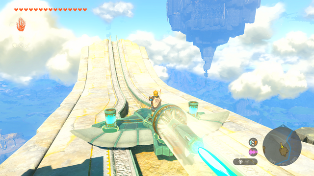

图：约舒娅与罗比——地底石像的秘密从「拍下地底人」开始，这篇接着往下走。
先说结论：下地底、学自动建造
做完任意一座神殿、拍过地底人之后，回监视堡垒找约舒娅接任务。从离监视堡垒最近的伊亚斯斯树根下地底，跟着石像指的方向一路往南，到中央大废矿：高台上调查绿色符号，管家构装体教你自动建造；修好两辆载具后可盖大人现身，打赢他、开宝箱、拿扇形飞机蓝图石，回去向约舒娅交差，再帮她修好堡垒外那辆破热气球。
| 阶段 | 要做的事 |
|---|---|
| 第一段：接任务 | 回监视堡垒研究室找约舒娅，拿巨大发光种子×10、箭×10 |
| 第二段：下地底往南 | 从伊亚斯斯树根出发，跟着石像指的方向往南，途经乌诺奇亚马树根 |
| 第三段：到矿场学自动建造 | 高台上调查绿色符号，管家构装体教你自动建造 |
| 第四段：修车 + 打可盖大人 | 修好圆台和方台两辆车，击败现身的可盖大人，开宝箱拿巨大结晶 |
| 第五段：回报 + 修热气球 | 乘扇形飞机飞向远处的树根，回监视堡垒交差，修好堡垒外的破热气球 |
接取与奖励
| 项目 | 内容 |
|---|---|
| 接取 | 监视堡垒研究室找约舒娅；她给巨大发光种子×10、箭×10 |
| 位置 | 地底 · 中央大废矿 |
| 前置 | 完成「拍下地底人」；通关任意一座神殿 |
| 奖励 | 自动建造、扇形飞机蓝图石、热气球蓝图石、巨大结晶、大左纳尼乌姆 |
| 后续 | 解锁哈特诺村研究所线与可盖大人线 |
出发前准备
| 准备 | 说明 |
|---|---|
| 发光果 / 巨大发光种子 | 地底一片漆黑，扔发光果照亮脚下；约舒娅会先给 10 颗巨大发光种子 |
| 箭 | 打可盖大人要用，多带；约舒娅也会先给 10 支 |
| 向阳草料理 | 瘴气会锁心，备几份向阳草料理回血 |
| 破魔树根 | 沿途顺手点亮，当传送点，下次再来不用重走 |
第一步：回监视堡垒找约舒娅
1先确认前置。做完「拍下地底人」、通关任意一座神殿之后，任务才出现。
2监视堡垒研究室找约舒娅。她说中央大废矿里有管家构装体，让你去调查。
3她先给补给。巨大发光种子×10、箭×10，地底照明和打架都用得上。
第二步：从伊亚斯斯树根出发、跟着石像往南
1离监视堡垒最近的是伊亚斯斯树根。从那里下地底出发最顺路。
2跟着石像指的方向往南走。地底的指路石像眼睛亮着蓝光，顺着它们指的方向走，不会走错。
3途经乌诺奇亚马树根，顺手点亮。当传送点，也照亮周围一片。
4路边瘴气区有弗洛克斯小首领。绕开走，别硬打，赶路要紧。

图：地底的指路石像——眼睛亮着蓝光，跟着它们指的方向往南走，就到中央大废矿。
第三步：矿场见管家构装体、学自动建造
1到中央大废矿，爬上高台。高台上有个发绿光的符号，调查它。
2管家构装体现身，教你自动建造。用过的载具能存成蓝图，一键再造出来。
3先把自动建造的用法记熟。后面修车、修热气球都靠它。
第四步：修好两辆车
1圆台上的车缺轮子。究极手把旁边的轮子装上去。
2方台上的车坏得更彻底。用刚学的自动建造，按蓝图把它修好。
3两辆车都修好，可盖大人就现身了。别急着走，架要打了。
首领战：可盖大人
1他开着载具冲过来，别硬扛。先躲开，等他从载具里露出来。
2他露头的时候射箭，把他打下来，再近身砍。
3他会给载具加装甲。先前面、再两侧，办法不变：等他露头再打。
4他扔过来的石球，用倒转乾坤打回去。
5打完开宝箱拿巨大结晶。再跟管家构装体说话，拿扇形飞机蓝图石。

图：可盖大人——修好车之后他就现身了，别硬扛他的载具，等他露头再打。
第五步：回报与修热气球
1用自动建造造出扇形飞机。乘它飞向远处的树根，顺路点亮。
2回监视堡垒找约舒娅交差。她给热气球蓝图石。
3堡垒外停着一辆破热气球。用自动建造修好它，得大左纳尼乌姆，任务完成。

图：扇形飞机——用自动建造造出来，飞向远处的树根。
关键信息
| 项目 | 内容 |
|---|---|
| 自动建造 | 管家构装体教的左纳乌能力，载具存成蓝图后一键再造 |
| 巨大结晶 | 打完可盖大人开宝箱得，值 100 结晶 |
| 蓝图石 | 扇形飞机蓝图石（矿场管家构装体给）、热气球蓝图石（向约舒娅交差后拿到） |
| 大左纳尼乌姆 | 修好堡垒外的破热气球，约舒娅给的报酬 |
| 解锁 | 哈特诺村研究所线、可盖大人线 |
容易翻车的地方
- 没做完「拍下地底人」就去找约舒娅——任务接不到，先把相机任务做完。
- 以为这篇能开启灵殿和第五贤者线——不能，那条线是城堡异变之后的另一条链。
- 可盖大人战硬扛他的载具——躲开、等他露头再射箭。
- 地底瘴气区硬闯——绕开弗洛克斯，瘴气锁的心用向阳草料理补。
一句话总结
做完一座神殿、拍过地底人，回监视堡垒找约舒娅，沿石像往南到中央大废矿学自动建造，修好车、打赢可盖大人，回来再修好热气球——自动建造到手，后面造载具省很多事。